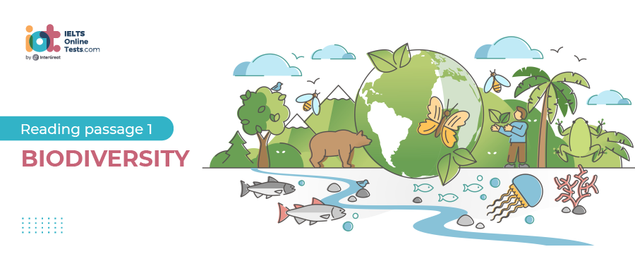

Part 1
READING PASSAGE 1
You should spend about 20 minutes on Questions 1 -13, which are based on Reading Passage 1 below.

Biodiversity
A
It seems biodiversity has become a buzzword beloved of politicians, conservationists, protesters and scientists alike. But what exactly is it? The Convention on Biological Diversity, an international agreement to conserve and share the planet’s biological riches, provides a good working definition: biodiversity comprises every form of life, from the smallest microbe to the largest animal or plant, the genes that give them their specific characteristics and the ecosystems of which they are apart.
B
In October, the World Conservation Union (also known as the IUCN) published its updated Red List of Threatened Species, a roll call of 11,167 creatures facing extinction – 121 more than when the list was last published in 2000. But the new figures almost certainly underestimate the crisis. Some 1.2 million species of animal and 270,000 species of plant have been classified, but the well-being of only a fraction has been assessed. The resources are simply not available. The IUCN reports that 5714 plants are threatened, for example, but admits that only 4 per cent of known plants has been assessed. And, of course, there are thousands of species that we have yet to discover. Many of these could also be facing extinction.
C
It is important to develop a picture of the diversity of life on Earth now so that comparisons can be made in the future and trends identified. But it isn’t necessary to observe every single type of organism in an area to get a snapshot of the health of the ecosystem. In many habitats, there are species that are particularly susceptible to shifting conditions, and these can be used as indicator species.
D
In the media, it is usually large, charismatic animals such as pandas, elephants, tigers and whales that get all the attention when a loss of biodiversity is discussed. However, animals or plants far lower down the food chain are often the ones vital for preserving habitats – in the process saving the skins of those more glamorous species. There are known as keystone species.
E
By studying the complex feeding relationships within habitats, species can be identified that have a particularly important impact on the environment. For example, the members of the fig family are the staple food for hundreds of different species in many different countries, so important that scientists sometimes call figs “jungle burgers”. A whole range of animals, from tiny insects to birds and large mammals, feed on everything from the tree’s bark and leaves to its flowers and fruits. Many fig species have very specific pollinators. There are several dozen species of the fig tree in Costa Rica, and a different type of wasp has evolved to pollinate each one. Chris Lyle of the Natural History Museum in London – who is also involved in the Global Taxonomy Initiative of the Convention on Biological Diversity – points out that if fig trees are affected by global warming, pollution, disease or any other catastrophe, the loss of biodiversity will be enormous.
F
Similarly, sea otters play a major role in the survival of giant kelp forests along the coasts of California and Alaska. These “marine rainforests” provide a home for a wide range of other species. The kelp itself is the main food of purple and red sea urchins and in turn, the urchins are eaten by predators, particularly sea otters. They detach an urchin from the seabed then float to the surface and lie on their backs with the urchin shell on their tummy, smashing it open with a stone before eating the contents. Urchins that are not eaten tend to spend their time in rock crevices to avoid the predators. This allows the kelp to grow – and it can grow many centimetres in a day. As the forests form, bits of kelp break off and fall to the bottom to provide food for the urchins in their crevices. The sea otters thrive hunting for sea urchins in the kelp, and many other fish and invertebrates live among the fronds. The problems start when the sea otter population declines. As large predators they are vulnerable – their numbers are relatively small to disease or human hunters can wipe them out. The result is that the sea urchin population grows unchecked and they roam the seafloor eating young kelp fronds. This tends to keep the kelp very short and stops forests developing, which has a huge impact on biodiversity.
G
Conversely, keystone species can also make dangerous alien species: they can wreak havoc if they end up in the wrong ecosystem. The cactus moth, whose caterpillar is a voracious eater of prickly pear was introduced to Australia to control the rampant cacti. It was so successful that someone thought it would be a good idea to introduce it to Caribbean islands that had the same problem. It solved the cactus menace, but unfortunately, some of the moths have now reached the US mainland – borne on winds and in tourists’ luggage – where they are devastating the native cactus populations of Florida.
H
Organisations like the Convention on Biological Diversity work with groups such as the UN and with governments and scientists to raise awareness and fund research. A number of major international meetings – including the World Summit on Sustainable Development in Johannesburg this year – have set targets for governments around the world to slow the loss of biodiversity. And the CITES meeting in Santiago last month added several more names to its list of endangered species for which trade is controlled. Of course, these agreements will prove of limited value if some countries refuse to implement them.
I
There is cause for optimism, however. There seems to be a growing understanding of the need for sustainable agriculture and sustainable tourism to conserve biodiversity. Problems such as illegal logging are being tackled through sustainable forestry programmes, with the emphasis on minimising the use of rainforest hardwoods in the developed world and on rigorous replanting of whatever trees are harvested. CITES is playing its part by controlling trade in wood from endangered tree species. In the same way, sustainable farming techniques that minimise environmental damage and avoid monoculture.
J
Action at a national level often means investing in public education and awareness. Getting people like you and me involved can be very effective. Australia and many European countries are becoming increasingly efficient at recycling much of their domestic waste, for example, preserving natural resources and reducing the use of fossil fuels. This, in turn, has a direct effect on biodiversity by minimising pollution, and an indirect effect by reducing the number of greenhouse gases emitted from incinerators and landfill sites. Preserving ecosystems intact for future generations to enjoy is obviously important, but biodiversity is not some kind of optional extra. Variety may be “the spice of life”, but biological variety is also our life-support system.
Part 2
READING PASSAGE 2
You should spend about 20 minutes on Questions 14-26, which are based on Reading Passage 2 below.

What are you laughing at?
A
We like to think that laughing is the height of human sophistication. Our big brains let us see the humour in a strategically positioned pun, an unexpected plot twist or a clever piece of wordplay. But while joking and wit are uniquely human inventions, laughter certainly is not. Other creatures, including chimpanzees, gorillas and even rats, chuckle. Obviously, they don’t crack up at Homer Simpson or titter at the boss’s dreadful jokes, but the fact that they laugh in the first place suggests that sniggers and chortles have been around for a lot longer than we have. It points the way to the origins of laughter, suggesting a much more practical purpose than you might think.
B
There is no doubt that laughing typical involves groups of people. ‘Laughter evolved as a signal to others – it almost disappears when we are alone,’ says Robert Provine, a neuroscientist at the University of Maryland. Provine found that most laughter comes as a polite reaction to everyday remarks such as ‘see you later’, rather than anything particularly funny. And the way we laugh depends on the company we’re keeping. Men tend to laugh longer and harder when they are with other men, perhaps as a way of bonding. Women tend to laugh more and at a higher pitch when men are present, possibly indicating flirtation or even submission.
C
To find the origins of laughter, Provine believes we need to look at the play. He points out that the masters of laughing are children, and nowhere is their talent more obvious than in the boisterous antics, and the original context plays,’ he says. Well-known primate watchers, including Dian Fossey and Jane Goodall, have long argued that chimps laugh while at play. The sound they produce is known as a panting laugh. It seems obvious when you watch their behavior – they even have the same ticklish spots as we do. But remove the context, and the parallel between human laughter and a chimp’s characteristic pant laugh is not so clear. When Provine played a tape of the pant laughs to 119 of his students, for example, only two guessed correctly what it was.
D
These findings underline how chimp and human laughter vary. When we laugh the sound is usually produced by chopping up a single exhalation into a series of shorter with one sound produced on each inward and outward breath. The question is: does this pant laughter have the same source as our own laughter? New research lends weight to the idea that it does. The findings come from Elke Zimmerman, head of the Institute for Zoology in Germany, who compared the sounds made by babies and chimpanzees in response to tickling during the first year of their life. Using sound spectrographs to reveal the pitch and intensity of vocalizations, she discovered that chimp and human baby laughter follow broadly the same pattern. Zimmerman believes the closeness of baby laughter to chimp laughter supports the idea that laughter was around long before humans arrived on the scene. What started simply as a modification of breathing associated with enjoyable and playful interactions has acquired a symbolic meaning as an indicator of pleasure.
E
Pinpointing when laughter developed is another matter. Humans and chimps share a common ancestor that lived perhaps 8 million years ago, but animals might have been laughing long before that. More distantly related primates, including gorillas, laugh, and anecdotal evidence suggests that other social mammals nay do too. Scientists are currently testing such stories with a comparative analysis of just how common laughter is among animals. So far, though, the most compelling evidence for laughter beyond primates comes from research done by Jaak Panksepp from Bowling Green State University, Ohio, into the ultrasonic chirps produced by rats during play and in response to tickling.
F
All this still doesn’t answer the question of why we laugh at all. One idea is that laughter and tickling originated as a way of sealing the relationship between mother and child. Another is that the reflex response to tickling is protective, alerting us to the presence of crawling creatures that might harm us or compelling us to defend the parts of our bodies that are most vulnerable in hand-to-hand combat. But the idea that has gained most popularity in recent years is that laughter in response to tickling is a way for two individuals to signal and test their trust in one another. This hypothesis starts from the observation that although a little tickle can be enjoyable if it goes on too long it can be torture. By engaging in a bout of tickling, we put ourselves at the mercy of another individual, and laughing is a signal that we laughter is what makes it a reliable signal of trust according to Tom Flamson, a laughter researcher at the University of California, Los Angels. ‘Even in rats, laughter, tickle, play and trust are linked. Rats chirp a lot when they play,’ says Flamson. ‘These chirps can be aroused by tickling. And they get bonded to us as a result, which certainly seems like a show of trust.’
G
We’ll never know which animal laughed the first laugh, or why. But we can be sure it wasn’t in response to a prehistoric joke. The funny thing is that while the origins of laughter are probably quite serious, we owe human laughter and our language-based humor to the same unique skill. While other animals pant, we alone can control our breath well enough to produce the sound of laughter. Without that control, there would also be no speech – and no jokes to endure.
Part 3
READING PASSAGE 3
You should spend about 20 minutes on Questions 27 - 40, which are based on Reading Passage 3 below.

The reconstruction of community in Talbot Park, Auckland
A. An architecture of disguise is almost complete at Talbot Park in the heart of Auckland’s Glen Innes. The place was once described as a state housing ghetto, rife with crime, vandalism and other social problems. But today after a $48 million urban renewal makeover, the site is home to 700 residents — 200 more than before — and has people regularly inquiring whether they can buy or rent there. “It doesn’t look like social housing,” Housing New Zealand housing services manager Dene Busby says of the tidy brick and weatherboard apartments and townhouses which would look just as much at home in “there is no reason why public housing should look cheap in my view,” says Design Group architect Neil of the eight three-bedroom terrace houses his firm designed.
B. Talbot Park is a triangle of government-owned land bounded by Apirana Ave, Pilkington Rd and Point England Rd. In the early 1960s it was developed for state housing built around a linear park that ran through the middle. Initially, there was a strong sense of a family-friendly community. Former residents recall how the Talbot Park reserve played a big part in their childhoods — a place where the kids in the block came together to play softball, cricket, tiggy, leapfrog and bullrush. Sometimes they’d play “Maoris against Pakehas” but without any animosity. “It was all just good fun”, says Georgie Thompson in Ben Schrader’s We Call it Home: A History of State Housing in New Zealand. “We had respect for our neighbours and addressed them by title Mr. and Mrs. soand-so,” she recalls.
C. Quite what went wrong with Talbot Park is not clear. We call it Home Records that the community began to change in the late 1970s as more Pacific Islanders and Europeans moved in. The new arrivals didn’t readily integrate with the community, a “them and us” mentality developed, and residents interacted with their neighbours less. What was clear was the buildings were deteriorating and becoming dilapidated, petty crime was on the rise and the reserve — focus of fond childhood memories — had become a wasteland and was considered unsafe.
D. But it wasn’t until 2002 that Housing New Zealand decided the properties needed upgrading. The master renewal plan didn’t take advantage of the maximum accommodation density allowable (one unit per 100 sq metres ) but did increase density to one emit per 180 sq m by refurbishing all 108 star flat units, removing the multis and building 111 new home. The Talbot strategy can be summed up as mix, match and manage. Mix up the housing with variety plans from a mix of architects, match house styles to what7 s built by the private sector, match tenants to the mix, and manage their occupancy. Inevitably cost comes into the equation.” If you’re going to build low cost homes, you’ve got to keep them simple and you can’t afford a fancy bit on them. ” says Michael Thompson of Architectus which designed the innovative threelevel Atrium apartments lining two sides of a covered courtyard. At $300,000 per two bedroom unit, the building is more expensive but provides for independent disabled accommodation as well as offering solar hot water heating and rainwater collection for toilet cisterns and outside taps.
E. The renewal project budget at $1.5 million which will provide park pathways, planting, playgrounds, drinking fountains, seating, skateboard rails, a half-size basketball hard court, and a pavilion. But if there was any doubt this is a low socio-economic area, the demographics for the surrounding Tamaki area are sobering. Of the 5000 households there, 55 percent are state houses, 28 per cent privately owned (compared to about 65 percent nationally) and 17 percent are private rental. The area has a high concentration of households with incomes in the $5000 to $15,000 range and very few with an income over $70,000. That’s in sharp contrast to the more affluent suburbs like Kohimarama and St John’s that surround the area.
F. “The design is for people with different culture background,” says architect James Lunday of Common Ground which designed the 21 large family homes. “Architecturally we decided to be relatively conservative — nice house in its own garden with a bit of space and good indoor outdoor flow.” There’s a slight reflection of the whare and a Pacific fale, but not overplayed “The private sector is way behind in urban design and sustainable futures,” says Bracey. “Redesigning sheets and parks is a big deal and very difficult to do. The private sector won’t do it, because It’s so hard.”
G. There’s no doubt good urban design and good architecture play a significant part in the scheme. But probably more important is a new standard of social control. Housing New Zealand calls it “intensive tenancy management”. Others view it as social engineering. “It’s a model that we are looking at going forward,” according to Housing New Zealand’s central Auckland regional manager Graham Bodman.1 The focus is on frequent inspections, helping tenants to get to know each other and trying to create an environment of respect for neighbours, ” says Bodman. That includes some strict rules — no loud parties after 10 pm, no dogs, no cats in the apartments, no washing hung over balcony rails and a requirement to mow lawns and keep the property tidy. Housing New Zealand has also been active in organising morning teas and sheet barbecues for residents to meet their neighbours. “IVs all based on the intensification,” says Community Renewal project manager Stuart Bracey. “We acknowledge if you are going to put more people living closer together, you have to actually help them to live closer together because it creates tension — especially for people that aren’t used to it.”
Part 1
Questions 1-7
Do the following statements agree with the information given in Reading Passage ?
In boxes 1-7 on your answer sheet, write
| TRUE. | if the statement agrees with the information | |
| FALSE. | if the statement contradicts the information | |
| NOT GIVEN. | If there is no information on this |
1.
2.
3.
4.
5.
6.
7.
Questions 8-13
Complete the following summary of the paragraphs of Reading Passage, using NO MORE THAN TWO WORDS from the Reading Passage for each answer.
Write your answers in boxes 8-13 on your answer sheet.
Because of the ignorance brought by media, people tend to neglect significant creatures called 8 . Every creature has diet connections with others, such as 9 , which provide a majority of foods for other species. In some states of America, the decline in a number of sea otters leads to the boom of 10 . An impressing case is that imported 11 successfully tackles the plant cacti in 12 . However, the operation is needed for the government to increase its financial support in 13 .
Part 2
Questions 14-19
Look at the following research findings (questions 14-19) and the list of people below.
Match each finding with the correct person A, B, C or D.
Write the correct letter, A, B, C or D, in boxes 14-19 on your answer sheet.
NB You may use any letter more than once.
| A. | Tom Flamson | |
| B. | Elke Zimmerman | |
| C. | Robert Provine | |
| D. | Jaak Panksepp |
14.
15.
16.
17.
18.
19.
Questions 20-23
Complete the summary using the list of words, A-K, below.
Write the correct letter, A-K, in boxes 20-23 on your answer sheet.
Some researchers believe that laughter first evolved out of 20.
Questions 24-26
Do the following statements agree with the information given in Reading Passage 1?
In boxes 24-26 on your answer sheet, write
| TRUE. | if the statement agrees with the information | |
| FALSE. | if the statement contradicts the information | |
| NOT GIVEN. | If there is no information on this |
24.
25.
26.
Part 3
Questions 27-33
Reading Passage has seven paragraphs, A-G.
Choose the correct heading for paragraphs, A-G from the list below.
Write the correct number, i-xi, in boxes 27-33 on your answer sheet.
| List of Headings | ||
| i. | Financial hardship of community | |
| ii. | A good tendency of strengthening the supervision | |
| iii. | Details of plans for the community’s makeover and upgrade | |
| iv. | Architecture suits families of various ethnic origins | |
| v. | Problems arise then the mentality of alienation developed later | |
| vi. | Introduction of a social housing community with unexpected high standard | |
| vii. | A practical design and need assist and cooperate in future | |
| viii. | closer relationship among neighbors in original site | |
| ix. | different need from a makeup of a low financial background should be considered | |
| x. | How to make the community feel safe | |
| xi. | a plan with details for house structure | |
27.
28.
29.
30.
31.
32.
33.
Questions 34-36
Use the information in the passage to match the people (listed A-E) with opinions or deeds below.
Write the appropriate letters, A-E, in boxes 34-36 on your answer sheet.
34.
35.
36.
| A. | Michael Thompson | |
| B. | Graham Bodman | |
| C. | Stuart Bracey | |
| D. | James Lunday | |
| E. | Dene Busby |
Questions 37-40
Complete the following summary of the paragraphs of Reading Passage
Choose NO MORE THAN TWO WORDS from the passage for each answer.
Write your answers in boxes 37-40 on your answer sheet.
In the year 2002, the Talbot decided to raise housing standard, yet the plan was to build homes go much beyond the accommodation limit and people complain about the high living 37 . And as the variety plans were complemented under the designs of many 38 together, made house styles go with the part designed by individuals, matched tenants from different culture. As for the finance, reconstruction program’s major concern is to build a house within low 39 ; finally, just as expert predicted residents will agree on building a relatively conventional house in its own 40 , which provides considerable space to move around